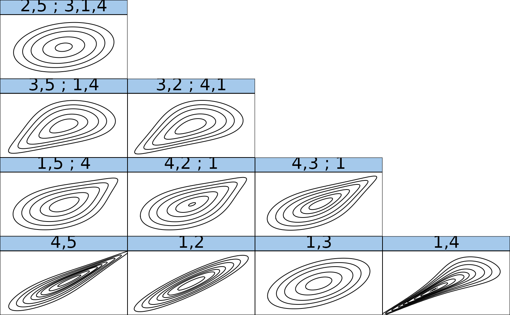

R/RVineCopSelect.R
RVineCopSelect.RdThis function fits a R-vine copula model to a d-dimensional copula data set.
Pair-copula families are selected using BiCopSelect() and
estimated sequentially.
RVineCopSelect( data, familyset = NA, Matrix, selectioncrit = "AIC", indeptest = FALSE, level = 0.05, trunclevel = NA, weights = NA, rotations = TRUE, se = FALSE, presel = TRUE, method = "mle", cores = 1 )
| data | N x d data matrix (with uniform margins). |
|---|---|
| familyset | integer vector of pair-copula families to select from.
The vector has to include at least one
pair-copula family that allows for positive and one that allows for negative
dependence. Not listed copula families might be included to better handle
limit cases. If |
| Matrix | lower or upper triangular d x d matrix that defines the R-vine tree structure. |
| selectioncrit | Character indicating the criterion for pair-copula
selection. Possible choices: |
| indeptest | Logical; whether a hypothesis test for the independence of
|
| level | numeric; significance level of the independence test (default:
|
| trunclevel | integer; level of truncation. |
| weights | Numerical; weights for each observation (optional). |
| rotations | logical; if |
| se | Logical; whether standard errors are estimated (default: |
| presel | Logical; whether to exclude families before fitting based on symmetry properties of the data. Makes the selection about 30\ (on average), but may yield slightly worse results in few special cases. |
| method | indicates the estimation method: either maximum
likelihood estimation ( |
| cores | integer; if |
An RVineMatrix() object with the selected families
(RVM$family) as well as sequentially
estimated parameters stored in RVM$par and RVM$par2. The object
is augmented by the following information about the fit:
standard errors for the parameter estimates (if
se = TRUE; note that these are only approximate since they do not
account for the sequential nature of the estimation,
number of observations,
log likelihood (overall and pairwise)
Aikaike's Informaton Criterion (overall and pairwise),
Bayesian's Informaton Criterion (overall and pairwise),
matrix of empirical values of Kendall's tau,
matrix of p-values of the independence test.
R-vine copula models with unknown structure can be specified using
RVineStructureSelect().
For a comprehensive summary of the vine copula model, use
summary(object); to see all its contents, use str(object).
Brechmann, E. C., C. Czado, and K. Aas (2012). Truncated regular vines in high dimensions with applications to financial data. Canadian Journal of Statistics 40 (1), 68-85.
Dissmann, J. F., E. C. Brechmann, C. Czado, and D. Kurowicka (2013). Selecting and estimating regular vine copulae and application to financial returns. Computational Statistics & Data Analysis, 59 (1), 52-69.
RVineMatrix(),
BiCop(),
BiCopSelect(),
plot.RVineMatrix(),
contour.RVineMatrix(),
foreach::foreach()
# define 5-dimensional R-vine tree structure matrix Matrix <- c(5, 2, 3, 1, 4, 0, 2, 3, 4, 1, 0, 0, 3, 4, 1, 0, 0, 0, 4, 1, 0, 0, 0, 0, 1) Matrix <- matrix(Matrix, 5, 5) # define R-vine pair-copula family matrix family <- c(0, 1, 3, 4, 4, 0, 0, 3, 4, 1, 0, 0, 0, 4, 1, 0, 0, 0, 0, 3, 0, 0, 0, 0, 0) family <- matrix(family, 5, 5) # define R-vine pair-copula parameter matrix par <- c(0, 0.2, 0.9, 1.5, 3.9, 0, 0, 1.1, 1.6, 0.9, 0, 0, 0, 1.9, 0.5, 0, 0, 0, 0, 4.8, 0, 0, 0, 0, 0) par <- matrix(par, 5, 5) # define second R-vine pair-copula parameter matrix par2 <- matrix(0, 5, 5) ## define RVineMatrix object RVM <- RVineMatrix(Matrix = Matrix, family = family, par = par, par2 = par2, names = c("V1", "V2", "V3", "V4", "V5")) ## simulate a sample of size 500 from the R-vine copula model set.seed(123) simdata <- RVineSim(500, RVM) ## determine the pair-copula families and parameters RVM1 <- RVineCopSelect(simdata, familyset = c(1, 3, 4, 5 ,6), Matrix) ## see the object's content or a summary str(RVM1)#> List of 20 #> $ Matrix : num [1:5, 1:5] 5 2 3 1 4 0 2 3 4 1 ... #> $ family : num [1:5, 1:5] 0 1 3 4 4 0 0 3 4 1 ... #> $ par : num [1:5, 1:5] 0 0.211 0.906 1.495 3.895 ... #> $ par2 : num [1:5, 1:5] 0 0 0 0 0 0 0 0 0 0 ... #> $ names : chr [1:5] "V1" "V2" "V3" "V4" ... #> $ MaxMat : num [1:5, 1:5] 5 2 3 4 4 0 2 3 4 1 ... #> $ CondDistr :List of 2 #> ..$ direct : logi [1:5, 1:5] FALSE TRUE TRUE TRUE TRUE FALSE ... #> ..$ indirect: logi [1:5, 1:5] FALSE FALSE FALSE FALSE FALSE FALSE ... #> $ type : chr "R-vine" #> $ tau : num [1:5, 1:5] 0 0.135 0.312 0.331 0.743 ... #> $ taildep :List of 2 #> ..$ upper: num [1:5, 1:5] 0 0 0 0.41 0.805 ... #> ..$ lower: num [1:5, 1:5] 0 0 0.465 0 0 ... #> $ beta : num [1:5, 1:5] 0 0.135 0.311 0.329 0.747 ... #> $ nobs : int 500 #> $ logLik : num 2036 #> $ pair.logLik : num [1:5, 1:5] 0 10.5 83.5 87.1 487 ... #> $ AIC : num -4052 #> $ pair.AIC : num(0) #> $ BIC : num -4010 #> $ pair.BIC : num(0) #> $ emptau : num [1:5, 1:5] 0 0.129 0.318 0.336 0.751 ... #> $ p.value.indeptest: num [1:5, 1:5] 0.00 1.54e-05 0.00 0.00 0.00 ... #> - attr(*, "class")= chr "RVineMatrix"summary(RVM1)#> tree edge | family cop par par2 | tau utd ltd #> ------------------------------------------------------------ #> 1 4,5 | 4 G 3.89 0.00 | 0.74 0.81 - #> 1,2 | 1 N 0.90 0.00 | 0.72 - - #> 1,3 | 1 N 0.48 0.00 | 0.32 - - #> 1,4 | 3 C 4.83 0.00 | 0.71 - 0.87 #> 2 1,5;4 | 4 G 1.49 0.00 | 0.33 0.41 - #> 4,2;1 | 4 G 1.60 0.00 | 0.37 0.46 - #> 4,3;1 | 4 G 1.90 0.00 | 0.47 0.56 - #> 3 3,5;1,4 | 3 C 0.91 0.00 | 0.31 - 0.47 #> 3,2;4,1 | 3 C 1.06 0.00 | 0.35 - 0.52 #> 4 2,5;3,1,4 | 1 N 0.21 0.00 | 0.14 - - #> --- #> type: R-vine logLik: 2035.9 AIC: -4051.8 BIC: -4009.66 #> --- #> 1 <-> V1, 2 <-> V2, 3 <-> V3, 4 <-> V4, 5 <-> V5## inspect the fitted model using plots if (FALSE) plot(RVM1) # tree structure contour(RVM1) # contour plots of all pair-copulas